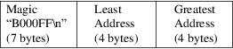
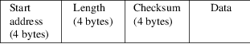
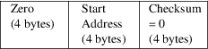

srec_msbin - Windows CE Binary Image Data Format
This format is the output of the Microsoft WinCE Platform Builder. This is a binary (non-text) file format. File names in this format typically (ambiguously) use the .bin suffix.
File
Format
Files in this format start with a header record.
Then comes the data itself, organized into records.
The file finishes with an execution start address record. This is mandatory.
File Header
Record
Data in this format start with an optional header containing
the magic “B000FF\n”, followed by the image
start (four bytes, little endian) address and the span of
the image (highest address - lowest address + 1) (four
bytes, little endian). The file header does not have a
checksum; it is therefore possible that a corrupt file
header will go undetected.

There is no provision for a file comment of any kind.
Data
Record
Each record consists of a record start address (four bytes,
little endian), a record length (four bytes, little endian),
a record checksum (four bytes, little endian), followed by
the record data. The data part of each record is raw byte
values, no encoding.

The checksum is calculated by a simple sum of unsigned bytes into a 32-bit accumulator.
The 12 record header bytes are not included in the record checksums; it is therefore possible that a corrupt record header will go undetected.
It is not possible to place data at address zero with this format. Address zero is reserved for use by the execution start address record.
There is effectively no limit on the length of a record (2^32-1). It is not uncommon for a MsBin file to contain records with sizes in the tens of megabytes.
Execution
Start Address Record
Last comes a special record with the record address set to
zero and record length set to the image execution start
address. According to specification the record describing
the execution start address must be always present, and must
always be the last record in the file.

Commentary
The MsBin files produced by SRecord are valid and can be
successfully parsed by the command line utilities viewbin
and cvrtbin (part of Windows CE platform).
For a MsBin file to be usable in Microsoft WinCE Platform Builder it has to contain a TOC meta-structure. This is data embedded in the file by Microsoft WinCE Platform Builder itself.
The opposite conversion - from MsBin - comes in handy when analyzing a MsBin file (i.e. a WinCE image).
Size
Multiplier
In general, binary data will expand in sized by
approximately 1.0 times (approaching asymptotically from
above) when represented with this format, as the 15-byte
file header is averaged over the data content. Holes in the
data will also increase the size.
http://msdn.microsoft.com/en-us/library/ms924510.aspx
srec_cat
version 1.65
Copyright (C) 1998, 1999, 2000, 2001, 2002, 2003, 2004,
2005, 2006, 2007, 2008, 2009, 2010, 2011, 2012, 2013, 2014,
2018, 2019, 2022 Peter Miller
The srec_cat program comes with ABSOLUTELY NO WARRANTY; for details use the ’srec_cat -VERSion License’ command. This is free software and you are welcome to redistribute it under certain conditions; for details use the ’srec_cat -VERSion License’ command.